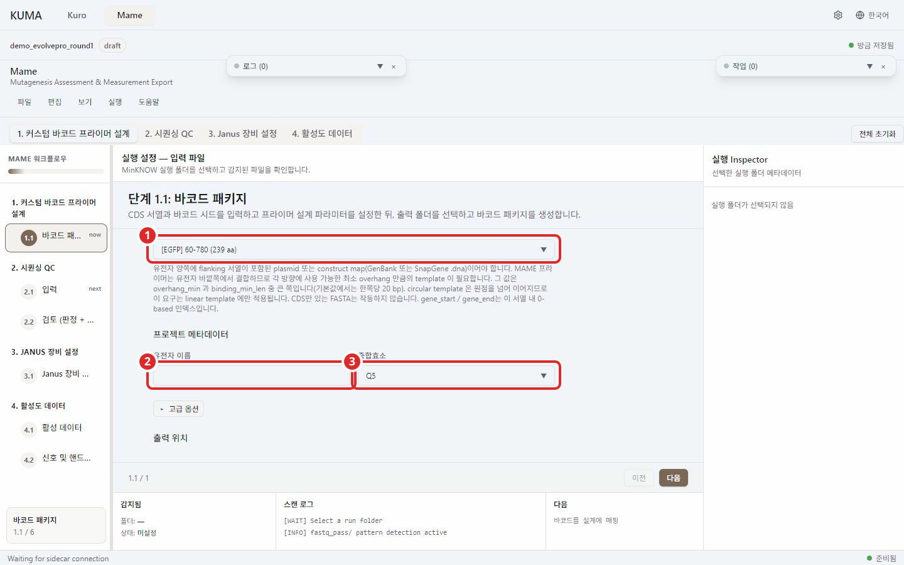
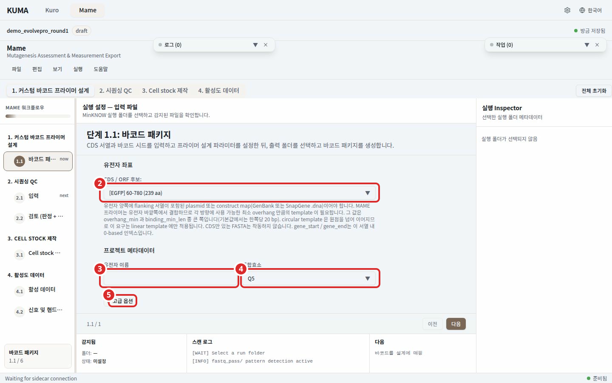
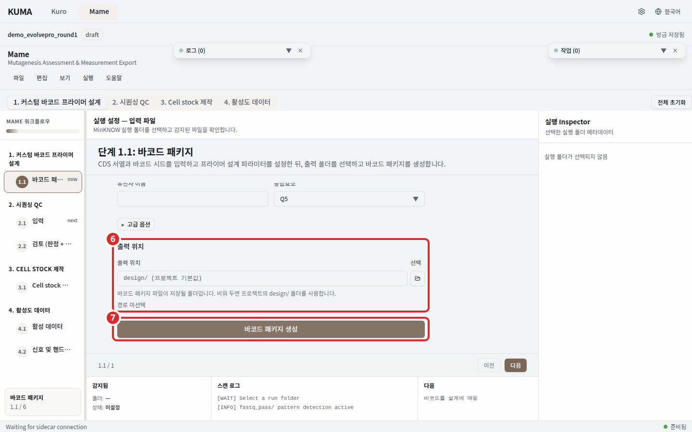

단계 1. 바코드 설정¶

번호 표시: 1 입력 파일

번호 표시: 2 유전자 좌표; 3 유전자 이름; 4 중합효소; 5 고급 옵션

번호 표시: 6 출력 위치; 7 바코드 패키지 생성
CDS 서열과 바코드 시드 파일로 MAME 바코드 패키지를 만드는 화면이다. 여기서 만든 amplicon 레퍼런스와 바코드 표가 2단계 분석의 입력이 된다.
순서¶
- 입력 파일 에서 CDS 서열과 바코드 시드 xlsx 를 고른다.
- 유전자 좌표 를 확인한다. 파일에서 CDS 후보를 찾으면 드롭다운으로 나오고 좌표가 자동으로 채워진다.
- 프로젝트 메타데이터 에 유전자 이름을 넣고 중합효소를 고른다.
- 필요하면 고급 옵션 을 펼쳐 플랭크와 결합 파라미터를 바꾼다.
- 출력 위치 를 고른다. 비워 두면 프로젝트의
design/폴더에 쓴다. - 바코드 패키지 생성 을 누른다.
입력¶
| 입력 | 형식 | 필수 |
|---|---|---|
| CDS 서열 | .fa .fasta .gb .gbk .dna |
필수 |
| 바코드 시드 xlsx | fwd_1..12, rev_1..8 시드 서열이 담긴 .xlsx |
필수 |
| 유전자 좌표 | gene_start, gene_end (0-based, 끝 제외) | 필수 |
| 유전자 이름 | 출력 파일명에 쓰이는 짧은 식별자 | 필수 |
| 중합효소 | Q5 / Taq / Phusion / KOD | 기본값 Q5 |
| 출력 위치 | 폴더 | 선택 |
CDS 서열은 유전자 양쪽에 flanking 서열이 포함된 plasmid 또는 construct map 이어야 한다. MAME 프라이머는 유전자 바깥쪽에서만 결합하고 안쪽으로는 들어가지 않으므로 각 방향에 overhang_max 전부가 아니라 사용 가능한 최소 overhang 만큼의 template 이 필요하다. 그 값은 overhang_min 과 binding_min_len 중 큰 쪽이다(기본값에서는 한쪽당 20 bp). linear template 에서는 탐색 범위가 서열 끝으로 클램프되고 circular template 은 원점을 넘어 이어지므로 이 요구는 linear template 에만 적용된다. CDS 만 있는 FASTA 는 작동하지 않는다.
두 탐색 파라미터는 모두 overhang 을 잰다. amplicon 의 바깥쪽 끝이 CDS 경계에서 얼마나 멀리 나가는지다. trim_flank_bp 와 말단 변이 경고가 쓰는 거리와 같은 축이다. 프라이머와 유전자 사이 간격은 설정 대상이 아니고 항상 0 이상이다. 프라이머가 덮은 자리 염기는 template 이 아니라 프라이머에서 읽히기 때문이다. overhang 은 그 간격에 결합 길이를 더한 값이므로 binding_min_len 보다 작은 overhang_min 은 어떤 프라이머도 들어갈 수 없는 구간을 가리키며 경고로 보고된다. 탐색 범위 기본값은 20 과 60 이다.
GenBank 입력은 첫 레코드의 서열과 CDS 주석만 불러온다. 뒤쪽 레코드를 쓰려면 flanking template을 포함한 해당 레코드를 별도 GenBank 파일로 내보낸다. 다른 레코드의 주석을 첫 템플릿과 함께 사용하지 않는다.
템플릿 위상 선택은 확장자가 .fa .fasta 인 일반 FASTA 를 골랐을 때만 나온다. FASTA 에는 위상 정보가 없기 때문이다. GenBank 와 SnapGene 파일은 파일 자체가 위상을 갖고 있어 이 선택이 나오지 않는다.
프라이머 검증 기준¶
바코드 프라이머의 결합부는 KURO 의 SDM 프라이머와 같은 다섯 가지 기준을 통과해야 선택된다. Tm 창(기본 55~68 ℃), 3' 말단 GC clamp, hairpin, homodimer, off-target 결합이다. hairpin 과 homodimer 는 primer3 로 계산한 구조 Tm 이 40.0 ℃ 를 넘으면 탈락한다. off-target 은 입력한 template 전체를 훑어 의도한 결합부 밖에서 45.0 ℃ 이상으로 붙는 자리가 하나라도 있으면 탈락한다. 임계값은 KURO 기본값과 같고 화면에서 바꾸지 않는다. hairpin 과 homodimer 의 농도 조건은 중합효소 프로파일이 아니라 고정된 설계용 값을 쓴다. 효소를 바꿨다는 이유로 선택되는 분자가 달라지지 않게 하기 위해서다. Tm 창은 기존대로 중합효소 프로파일을 따른다.
off-target 탐색 범위는 넣은 파일이 전부다. flanking 서열을 포함한 plasmid 나 construct map 을 넣으면 KURO 와 같은 범위로 검사되고 CDS 만 담긴 FASTA 를 넣으면 검사할 서열도 그만큼 좁다.
다섯 기준을 모두 통과하는 후보가 없으면 설계가 중단되지 않고 Tm 이 목표에 가장 가까운 후보가 선택된다. 이때 경고에 그 프라이머가 어느 검사에서 몇 ℃ 로 걸렸는지 적힌다. 그 경고가 보이면 프라이머를 주문하기 전에 읽는다.
실제로 합성되는 분자는 시드와 결합부를 이어 붙인 올리고 20 개다. 이 전체 올리고에도 hairpin 과 homodimer 검사를 돌리고 40.0 ℃ 를 넘는 것을 경고 한 줄에 모아 보고한다. 이 검사는 경고만 내고 선택을 바꾸지 않는다. 시드는 이미 주문된 고정 입력이라 대신 고를 대상이 없기 때문이다. 60 nt 를 넘는 올리고는 primer3 가 계산을 거부하므로 검사하지 못했다고 따로 알린다.
경고와 오류¶
| 화면에 나오는 말 | 할 일 |
|---|---|
| 이 파일에서 유전자 주석을 읽지 못했습니다 | GenBank 또는 SnapGene 파일이 손상되었는지 확인하고 다른 파일로 다시 고른다 |
| CDS를 감지하지 못했습니다. 좌표를 수동으로 입력하세요. | gene_start 와 gene_end 를 직접 넣는다 |
| gene_end는 gene_start보다 커야 합니다. | 두 좌표를 바꿔 넣지 않았는지 확인한다 |
| 선형 template에서는 프라이머 설계가 실패할 수 있습니다 | 유전자 바깥 template 이 사용 가능한 최소 overhang 보다 짧다는 뜻이다. binding 길이나 overhang_min 을 줄이거나 flanking 서열이 더 긴 파일을 쓴다. 생성 버튼을 막지는 않는다 |
| 패키지를 생성하려면 프로젝트를 열어야 합니다 | 파일 메뉴에서 프로젝트 열기를 고른다. 프로젝트가 없으면 생성 버튼이 눌리지 않는다 |
| 필수 입력이 누락되어 진행할 수 없습니다 | 목록에 나온 항목을 채운다. 생성 버튼은 입력이 비어 있어도 눌리고 이 안내로 알려준다 |
| 생성 실패 | 안내에 적힌 사유를 읽는다. 파라미터를 바꾸지 않고 다시 눌러도 같은 결과가 나온다 |
출력 폴더가 이미 있으면 덮어쓸지 묻는 확인창이 먼저 뜬다.
생성된 파일¶
성공하면 생성된 파일 에 세 개가 나온다.
- 바코드 표 (xlsx)
- Amplicon 레퍼런스 (FASTA)
- Run context (JSON)
폴더 열기 로 저장 위치를 연다. 생성이 끝나면 amplicon 레퍼런스가 2단계의 reference 로, 바코드 표가 커스텀 바코드 파일로 자동 설정된다. 패키지를 만들기 전에 Next 를 누르면 진행이 막힌다.